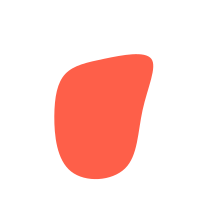
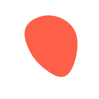
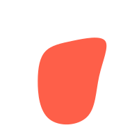
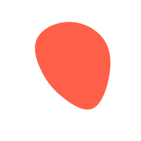

Nous développons ensemble et formalisons la
stratégie digitale
pour votre entreprise, afin qu’elle soit 100% alignée à vos spécificités et qu’elle réponde à vos enjeux
de développement – capter de nouveaux prospects, fidéliser les clients actifs, générer des demandes de
devis, augmenter les ventes en lignes, etc.
Sur cette base, je développe les projets brique par brique, avec l’aide de mon équipe de spécialistes
freelance : graphiste, développeur, rédactrice, etc. Une fois le dispositif en place, nous l’animons
ensemble dans la durée - news, promotion, lancement, etc. - en nous concentrant sur l’efficacité du
processus d’acquisition.
L'océan digital est vaste, fixons le cap !
C’est l’utilisation
d’internet et des technologies au sens large pour atteindre vos clients, pénétrer de nouveaux
marchés, lancer de nouveaux produits, promouvoir de nouvelles offres. Le marketing digital est à
vocation commerciale ; on pourrait dire qu’il sert à «faire acheter».
La communication digitale s’inscrit également dans ce processus. Ses actions sont moins directement
commerciales : elles sont plutôt orientées vers la notoriété de l’entreprise et la qualité de son
image de marque. Les actions de marketing digital intègrent toujours une dimension communication.
Des actions concrètes pour naviguer vers votre réussite.
C’est l’ensemble des actifs qui assurent la présence de votre entreprise sur le web.
Le rôle du conseil en marketing digital est justement de les « synchroniser » afin de maximiser l’efficacité de chaque élément et que tout l’ensemble soit orienté vers la performance.
Synchronisons vos actifs, allons plus loin !
Au moment où l’on détermine la stratégie digitale, il est très important de se mettre d’accord sur des indicateurs de performance spécifiques – on parle souvent de KPI (Key Performance Indicators). De façon assez générique, la performance digitale se mesure sur les critères suivants :
● L’efficacité des canaux d’acquisition (publicité, référencement naturel, etc.)
● Les facteurs « on-site » : le temps passé sur le site, le nombre de pages consultées, etc.
● L’attractivité sociale : nombre de « followers » sur vos pages sociales, portée de vos publications, etc.
● Le volume de micro-conversions : abonnement à la newsletter, téléchargement d’un livre blanc, etc.
● Le nombre de conversions : ventes réalisées pour un site e-commerce, demande de devis ou de contact sur un site vitrine.
Mesurons la trajectoire et ajustons le gouvernail !
Besoin d’un 1er échange téléphonique, sans engagement,
pour discuter d’un sujet digital spécifique ?

Contactons-nous

(+33) 09 52 30 51 31

bonjour@prodig.fr
Connectons-nous


Calendly
Newsletter
PRODIG 2021 ©